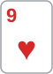
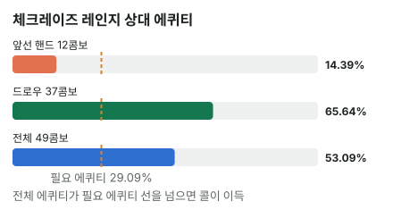

안녕하세요. I22에서 오버페어와 플러시 드로우가 올인으로 붙는 장면을 봤죠. 오늘은 그 올인 바로 전 단계예요.
드로우가 많은 플랍에서 KK로 c-bet(프리플랍에 레이즈한 사람이 플랍에서 이어서 하는 벳)했더니, 상대가 체크레이즈(먼저 체크한 뒤 상대 벳에 레이즈)를 해 왔어요. "체크레이즈 = 셋"이라는 공포와 "KK는 오버페어"라는 자신감 사이에서, 오늘은 상대 레이즈를 두 묶음으로 나눠 차분히 정해 봐요.
이 글에서 배울 것
- 체크레이즈 레인지를 "이미 앞선 핸드"와 "드로우" 두 묶음으로 빠짐없이 세는 법
- 두 묶음의 에퀴티를 콤보 수로 가중 평균해서 레인지 에퀴티를 직접 만드는 법
- 드로우는 "약한 핸드"가 아니라 에퀴티를 꽤 가진 상대라는 것, 그래서 콜 결정이 묶음의 비율로 정해지는 이유
오늘의 핸드
Hero (BTN 자리 · 스택 100BB) / 상대(BB) 100BB


프리플랍
Hero(BTN) 2.5BB 오픈 → SB 폴드 → 상대(BB) 콜
팟 5.5BB
플랍 · 팟 5.5BB

상대 체크 → Hero 3BB c-bet → 상대 11BB 체크레이즈 → Hero는 콜? 폴드?
Hero는 오버페어(보드의 가장 높은 카드보다 높은 포켓페어)예요. 하트 두 장에 T·9가 붙어 있어 플러시·스트레이트 드로우가 많은 보드죠.
결론부터 말할게요. 오늘 가정한 상대라면 이번 결정 기준으로 콜이 이득입니다.
남은 베팅이 있어 실제 결과는 달라질 수 있어요. 그래서 오늘은 금액(EV) 대신 에퀴티 vs 필요 에퀴티로만 판정해요.
1단계. 필요 에퀴티
Hero는 이미 3BB를 냈고, 상대 11BB에 맞추려면 8BB를 더 내요.
필요 에퀴티 = 8(Hero가 더 낼 돈) ÷ 27.5(콜한 뒤 팟: 5.5 + 3 + 11 + 8) = 약 29.09%
이미 낸 3BB는 팟의 돈이라 세지 않아요. 8을 내고 19.5를 노리는 콜이라, 10번 중 3번 정도만 이겨도 본전이에요.
2단계. 체크레이즈 레인지를 두 묶음으로 (가정)
상대가 이 보드에서 체크레이즈하는 핸드를 이렇게 가정할게요(솔버 결과 아님).
| 묶음 | 핸드 | 콤보 |
|---|---|---|
| 이미 앞선 핸드 | TT, 99, 55(셋), T9s(투페어) | 12 |
| 스트레이트 드로우 | QJ, J8s, 87s, 76s | 28 |
| 하트 플러시 드로우 | A♥2♥~A♥8♥(A♥5♥ 제외), K♥Q♥, Q♥8♥, J♥7♥ | 9 |
💡 빨리 세는 팁: 셋은 보드에 같은 숫자가 한 장씩 있어서 남은 3장 중 2장 → 3콤보씩. T9s도 T♥·9♥가 보드에 있어 하트 무늬를 빼면 3콤보
드로우 묶음을 한 줄씩
- QJ(16콤보): K나 8이 오면 스트레이트(양방). 그런데 K는 Hero가 두 장 쥐고 있어서 K 아웃츠가 2장뿐이에요
- J8s: Q나 7, 87s: J나 6이 오면 스트레이트(양방)
- 76s: 8 한 장만 기다리는 거트샷(아웃츠 4장)
- 하트 플러시 드로우: 하트 한 장이면 플러시. 그중 K♥Q♥·Q♥8♥는 J, J♥7♥는 8이 오면 스트레이트도 되는 거트샷을 같이 들고 있어요
그리고 스트레이트 드로우 16 + 4 + 4 + 4 = 28 중 Q♥J♥·J♥8♥·8♥7♥·7♥6♥ 4콤보는 하트 두 장이라 스트레이트와 플러시를 같이 노려요. A♥5♥(5 페어 + 플러시 드로우)는 이 상대가 레이즈 대신 콜로 간다고, T5s·95s 같은 투페어는 이 상대가 프리플랍에 BB에서 콜하지 않는다고 가정해서 뺐어요.
이게 무슨 뜻이냐면, 이 체크레이즈 49콤보 중 KK가 지금 지고 있는 건 12콤보뿐이고, 나머지 37콤보는 KK가 앞서 있지만 아직 끝나지 않은 싸움이라는 거예요.
3단계. 묶음별 에퀴티와 가중 평균
계산기로 턴·리버를 전부 세면 이래요.
| 묶음 | 콤보 | Hero 에퀴티 |
|---|---|---|
| 이미 앞선 핸드 | 12 | 약 14.39% |
| 드로우 | 37 | 약 65.64% |
| 전체 | 49 | 약 53.09% |
전체 에퀴티는 이렇게 만들어져요
전체 에퀴티는 두 묶음을 콤보 수만큼 가중해서 평균 낸 값이에요.
(12 × 0.14394 + 37 × 0.65636) ÷ 49 → 약 53.09%
앞선 핸드 상대로는 14.39%로 크게 밀리지만, 그 묶음은 12콤보뿐이에요. 드로우 묶음이 37콤보로 세 배 넘게 많아서 평균이 절반 위로 올라와요.
드로우 상대로도 65.64%인 이유
드로우 상대로도 Hero가 늘 이기는 건 아니에요. 드로우는 아직 진 게 아니라 턴·리버 두 장이 남아 있으니까요. 특히 하트와 스트레이트를 같이 노리는 4콤보는 Hero와 반반에 가까울 수 있는 상대예요.
그래도 Hero가 3번 중 2번 정도는 이기니, 이 묶음이 레인지의 대부분이면 전체로는 Hero가 앞서요.

4단계. 비교
| 확률 | |
|---|---|
| 필요 에퀴티 | 약 29.09% |
| Hero 에퀴티 | 약 53.09% |
53.09% > 29.09%라 이번 결정 기준으로 콜이에요. 차이가 넉넉해서, 상대 레인지 가정이 조금 틀려도 쉽게 뒤집히지 않아요.
왜 그럴까: 체크레이즈는 "센 핸드 + 드로우"가 섞인 벳이에요
상대가 레이즈하는 두 이유
체크레이즈를 하는 이유는 리버 벳과 비슷하게 둘로 나눌 수 있어요.
- 이미 앞선 핸드: 셋·투페어로 돈을 더 넣으려는 레이즈
- 드로우: 지금은 지고 있지만, Hero를 접게 하거나 카드가 오면 이기려는 레이즈(세미블러프)
리버와 다른 점은 두 번째 묶음도 이길 길이 남아 있다는 것이에요. 리버 블러프는(이 글 정의대로 Hero에게 지는 핸드라) 쇼다운에서 지지만, 플랍 드로우는 두 장을 더 봐요. 그래서 49콤보 중 37콤보, 4분의 3이 드로우인데도 Hero 에퀴티는 53.09%예요. 드로우 비율 그대로가 아니라 그보다 낮죠.
결정은 묶음의 비율로 정해져요
필요 에퀴티 29.09%는 상대 레이즈 크기가 정했고, Hero 에퀴티는 두 묶음이 몇 대 몇이냐가 정해요. 앞선 핸드가 늘수록 평균은 14.39% 쪽으로, 드로우가 늘수록 65.64% 쪽으로 끌려가요.
그래서 이 장면에서 우리가 물어야 할 건 "KK가 센가"가 아니라 "이 상대가 이 보드에서 드로우로도 체크레이즈를 하는 사람인가"예요.
보드가 드로우를 만들어 줘요
T♥9♥5♣처럼 하트 두 장에 숫자가 붙은 보드는 상대에게 세미블러프할 핸드를 많이 쥐여 줘요. 같은 KK라도 드로우가 거의 없는 마른 보드에서 체크레이즈를 맞았다면, 상대 레이즈에 섞일 드로우 묶음이 작아서 이야기가 달라질 수 있어요.
자주 하는 실수
실수 1. "체크레이즈 = 셋, KK는 접는다" 레이즈의 무서움만 보고 앞선 핸드 묶음만 떠올리는 경우예요. 오늘 가정에서 앞선 핸드는 49콤보 중 12콤보였고, 나머지 37콤보는 KK가 앞선 드로우였어요. 그래서 전체 에퀴티가 53.09%로 필요 에퀴티를 넉넉히 넘었죠. 대신 레이즈를 맞으면 보드부터 보고 상대가 들 수 있는 드로우 후보를 먼저 떠올려요.
실수 2. "드로우는 못 맞춘 핸드니까 KK가 다 이긴다" 드로우를 리버 블러프처럼 "이길 길이 없는 핸드"로 치는 경우예요. 실제로 드로우 묶음 상대 Hero 에퀴티는 65.64%였어요. 드로우를 그렇게 보면 Hero 에퀴티를 부풀리게 되고, 앞선 핸드가 많은 상대에게도 콜하게 돼요. 대신 드로우는 에퀴티를 가진 상대로 따로 세요.
실수 3. 내 카드가 지우는 아웃츠를 안 봄 QJ의 스트레이트 아웃츠를 "K나 8, 8장"으로 세는 경우예요. Hero가 K♠K♦를 쥐고 있어 K는 2장만 남았어요. 상대 드로우의 아웃츠가 줄면 그만큼 Hero 에퀴티가 올라가요. 대신 상대 드로우를 셀 때도 내 카드부터 지우고 세요.
"KK면 올인해야 하지 않아요?"
좋은 질문이에요. 드로우가 많은 보드라 올인으로 드로우를 접게 하고 싶을 수 있어요.
하지만 오늘 계산은 이번 콜만 본 거예요. 올인하면 앞선 핸드 12콤보는 당연히 콜하고, 드로우가 콜할지 접을지에 따라 답이 달라져요. 올인했을 때 득실은 두 묶음에서 따로 나와요.
- 드로우가 접으면: Hero가 65.64% 에퀴티를 가지던 상대를 내보내요. 더 받아 낼 돈은 사라지지만, 대신 상대가 턴·리버에 역전할 몫도 지워요
- 앞선 핸드 12콤보: 올인에 당연히 콜해서, Hero가 14.39%로 크게 밀리는 싸움에 스택이 다 들어가요
그래서 올인이 좋은지는 "드로우가 콜하나 접나"와 "앞선 핸드 비율"을 따로 봐야 정해져요. I22에서 본 올인 대결과는 다른 계산이에요.
콜하면 팟 27.5BB에 남은 스택이 각자 86.5BB예요. 턴에 큰 결정이 바로 와요(SPR은 A10에서 다뤄요).
숫자가 뒤집히는 지점
기준은 Hero 에퀴티가 필요 에퀴티 약 29.09%보다 높은가예요.
- 체크레이즈 레인지의 두 묶음 비율이 바뀌면 Hero 에퀴티가 다시 계산돼요
- 레이즈 크기가 바뀌면 필요 에퀴티가 다시 계산돼요
문제 1·2에서 직접 확인해 보세요.
선생님의 한마디
체크레이즈를 맞으면 우리는 이 순서로 해요.
- 보드부터: 이 보드가 상대에게 드로우를 얼마나 쥐여 주는지 봐요
- 두 줄로 적기: 셋·투페어 줄과 드로우 줄, 내 카드로 지운 뒤 콤보 수
- 가중 평균 어림: 앞선 줄은 크게 밀림, 드로우 줄은 3번 중 2번쯤 이김. 그 평균이 필요 에퀴티 위인지 봐요
연습 문제 (같은 보드, 같은 Hero 핸드)
학습툴 에퀴티 계산기에는 핸드 대 핸드만 넣을 수 있어요. 레인지 숫자는 아래 정답(블로그에서 직접 계산한 값)을 따라가 보고, 학습툴에서는 K♠K♦ 대 T♣T♠, K♠K♦ 대 Q♥J♥처럼 한 핸드씩 넣어 확인해 보세요.
문제 1. 이 상대는 드로우로는 거의 레이즈하지 않아요. TT, 99, 55, T9s, 87s로만 체크레이즈해요. 콜? 폴드?
정답 보기
레인지 16콤보(앞선 핸드 12 + 87s 4), Hero 에퀴티 약 26.05% < 약 29.09% → 폴드. 가중 평균 모양으로 보면 (12 × 약 0.144 + 4 × 87s 상대 에퀴티) ÷ 16이에요. 앞선 핸드가 4분의 3을 차지해서 평균이 14.39% 쪽으로 크게 끌려갔어요. 같은 KK, 같은 레이즈 크기인데 상대가 레이즈에 무엇을 섞느냐로 결론이 뒤집혀요.
문제 2. 레인지는 오늘과 같은데, 상대가 18BB로 크게 체크레이즈했다면?
정답 보기
Hero가 더 낼 돈 18 − 3 = 15BB → 필요 에퀴티 = 15 ÷ 41.5 = 약 36.14%(콜한 뒤 팟 5.5 + 3 + 18 + 15). Hero 에퀴티는 그대로 약 53.09% → 콜. 레이즈가 커지면 필요 에퀴티는 올라가지만, 레인지가 그대로면 Hero 에퀴티는 안 바뀌어요. 오늘은 차이가 넉넉해서 큰 레이즈에도 버텨요.
핵심 정리
- 체크레이즈 레인지는 이미 앞선 핸드(셋·투페어)와 드로우 두 묶음으로 나눠 콤보로 세요
- 레인지 에퀴티 = 묶음별 에퀴티의 콤보 가중 평균. 앞선 묶음은 크게 밀리고, 드로우 묶음은 Hero가 앞서 있지만 상대에게도 이길 길이 남아 있어요
- 결론은 KK의 세기보다 두 묶음의 비율과 레이즈 크기가 정해요
정리하며
오늘은 T♥9♥5♣에서 KK c-bet에 체크레이즈를 맞았어요. 필요 에퀴티는 8을 내고 19.5를 노려 약 29.09%였고, 상대 레인지 49콤보를 앞선 핸드 12와 드로우 37로 나눠 가중 평균하니 Hero 에퀴티가 약 53.09%라 콜이었죠.
드로우가 많은 보드에서 레이즈를 맞으면 "셋인가?"보다 "드로우가 몇 콤보 섞였나"를 먼저 떠올리세요.
다음 글 A24에서는 플랍을 떠나 리버로 가요. 상대가 팟의 두 배를 걸어 오는 오버벳 앞에서, 탑페어로 MDF만큼 지켜야 하는지를 따져요.
AI 작성 · 숫자는 계산 검증 (플랍 이후 턴·리버 전부 세기) · 가정 레인지 기준 (솔버 결과 아님) · 이번 한 번의 결정 기준(턴 이후 베팅은 계산에 넣지 않음)